Introduction
When a team splits between home and office, the cheap information disappears first. Meetings survive — they are scheduled, they have owners. What goes is everything that used to cost nothing: knowing whether someone is at their desk, whether they are deep in something, whether this is a reasonable moment to ask a two-minute question.
Teams replaced that with status dots and calendar blocks. Both fail in the same way. A green dot tells you someone's client is running; it tells you nothing about whether they can be interrupted. So people either ignore the signal or misread it, and the small exchanges that hold a team together stop happening.
The research question was this: how can we design awareness-supporting technologies to promote informal communication in hybrid work? I worked on it across four studies. The first found the design opportunity, the second turned it into something designable, and the last two tested it — once by comparing concepts in a lab, once by putting a working prototype in front of real teams.
Study 01 · Exploratory
What people actually miss
I ran this during the COVID lockdown, while people could still compare intensive remote work against an office they had just left. I adapted the co-constructing-stories method: a storyboard of a typical remote workday to sensitize participants, then two desktop design concepts — a peripheral notification window and a central display — for them to react to. Ten participants were selected from 26 questionnaire responses to spread the group across gender, origin, country of work, managerial role, and how often they communicated informally.
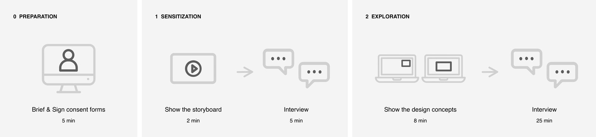
Thematic analysis produced five themes: work integrating into daily routines, non-intrusive design, information complexity, social factors, and availability for informal communication.
What came out was a direction rather than a requirement. People did not ask for more information about their colleagues. They described missing the way that information used to reach them — noticed in passing, read in context, acted on without ceremony. I named that target human-like experiences, and the rest of the research builds on it.
Study 02 · Framing
Making the direction designable
A direction is not actionable on its own. I built a design space from an annotated portfolio of existing and speculative awareness systems, then ran co-design workshops where participants generated concepts inside the emerging structure. That was the test of whether the space was usable by someone other than me. A second round of brainstorming, speculation and prototyping developed the fourth aspect, lightweight interactions, which the first round had left thin.
The space is organized around four aspects:
- Social cues as information carriers — using movement, posture and gesture rather than symbols.
- Processing information with ambiguity — deciding how precisely to say something.
- Delivering information in ambient design — placing it at the periphery rather than in the foreground.
- Built-in lightweight interactions — letting people respond without it becoming a task.
A designer can enter from any aspect and reason through the others. It works as a generative tool for ideation and as an analytic lens for reading systems that already exist.
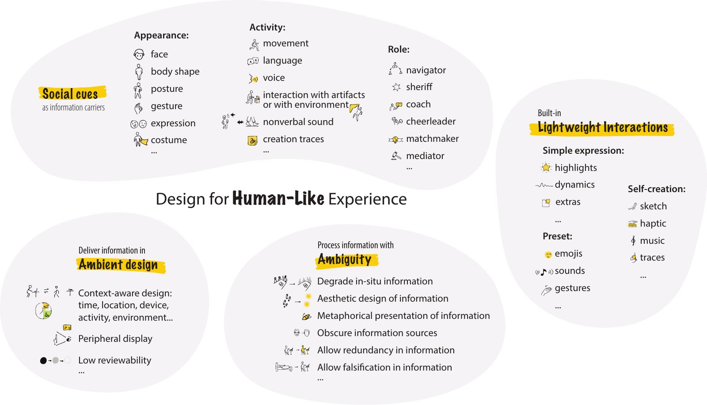
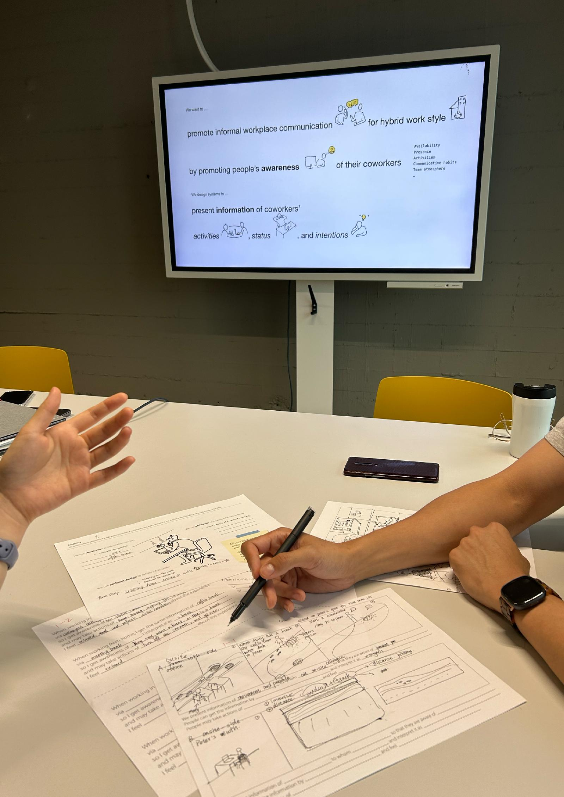
Study 03 · Comparative evaluation
Three concepts, one variable
I designed three displays that carry a colleague's presence through movement rather than an icon. They show the same office activity information and differ on a single design variable — how much the system says on someone's behalf.
- Abstract Circles — abstraction. Presence as form and motion, nothing figurative.
- Moving Shadows — degradation. Enough silhouette to read as a person, not enough to identify one.
- Metaphorical Bees — metaphor. Activity carried by a swarm.
Ambiguity here is the design lever. Say too much and the display becomes surveillance. Say too little and it carries nothing anyone can use. The three concepts sit at different points on that trade-off so it could be tested rather than argued about.

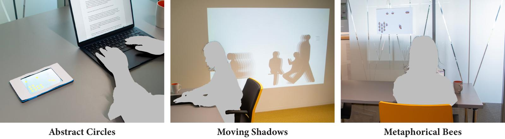
Twenty-four participants, all with current or prior hybrid work experience, experienced all three in a lab set up as an office, working through fixed scenarios.
The measurement instrument was itself a design problem. A paper questionnaire flattens exactly the kind of experience I was asking about — people tick a box and stop thinking. So I built a tangible five-point scale where participants positioned magnetic images of each design along a continuous line, and used the object as the spine of the interview. People reason out loud while their hands are busy, and the position they settle on becomes something to discuss rather than a number to record.
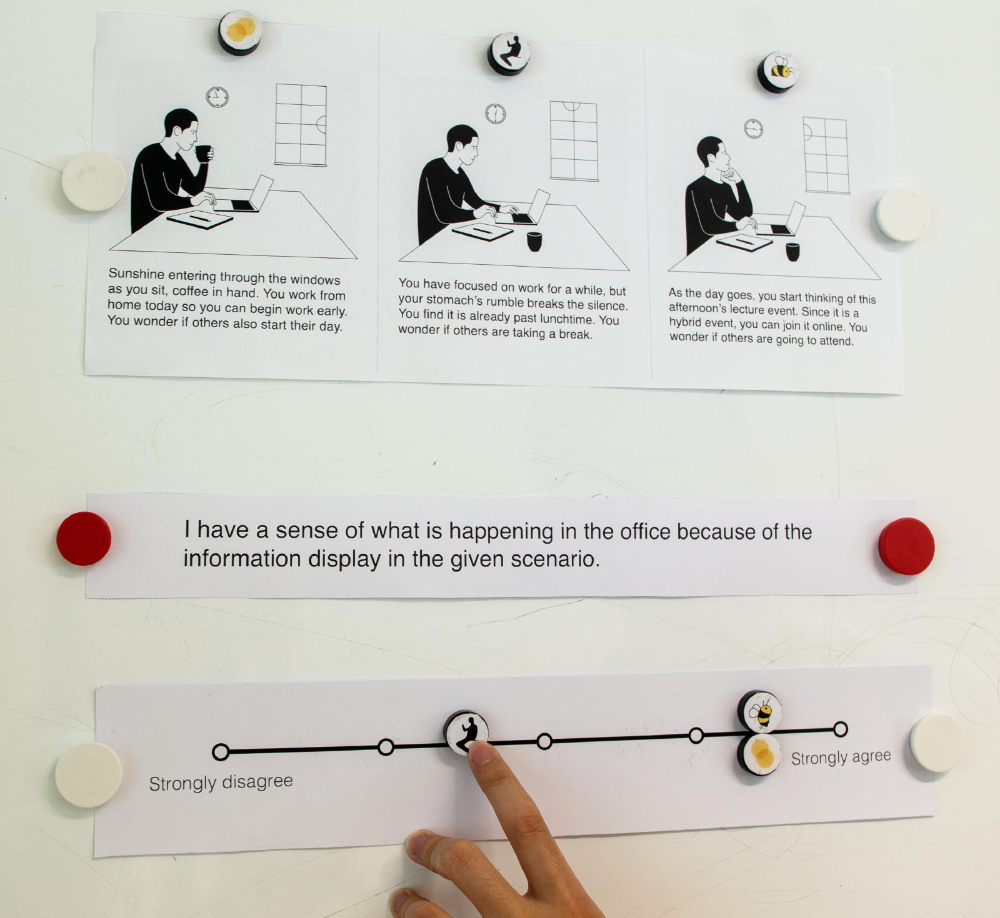
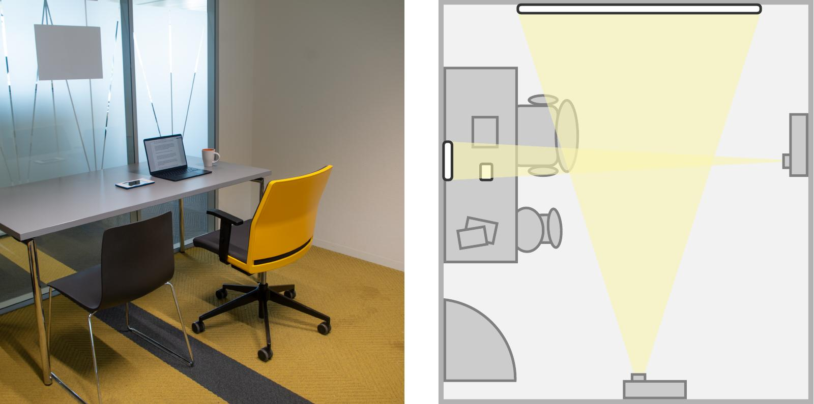
All three supported situational awareness and social presence, and the comparison showed where each one belongs. The abstract design suited general, collective information. The figurative one carried richer cues for reading an individual — but Moving Shadows also raised expectations the system could not meet and prompted concerns about being watched. It looked more real than it could behave.
Study 04 · Situated evaluation
One prototype, five teams
A lab comparison is not a system in use. I applied the design space to one concrete setting — research staff in my own department, who work hybrid and share an open-plan office with flexible desks — generated concepts for it, and built one into a working system — two screens, four sensing prototypes and the visualization software connecting them. Teammates appear as posture silhouettes with doodle interactions layered on top, and the sensing prototypes read posture from the chairs rather than from a device anyone has to operate.
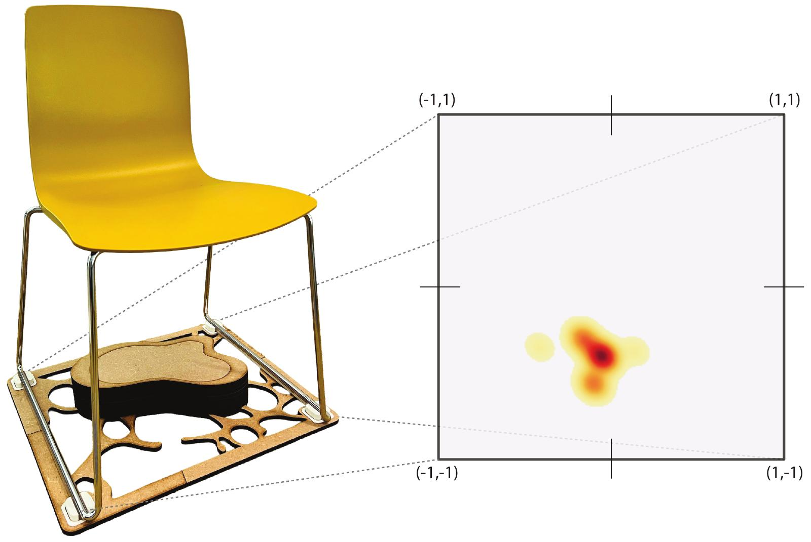
Five teams of four, twenty people, half a day per team. Each team worked together at a shared desk on their own floor while one member at a time worked alone in a lab across the hallway, set up as a home office. That kept the collaboration real and the remote condition controlled, and it let people stay in the building they normally work in.
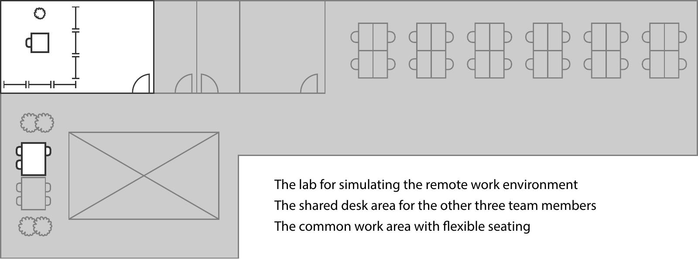
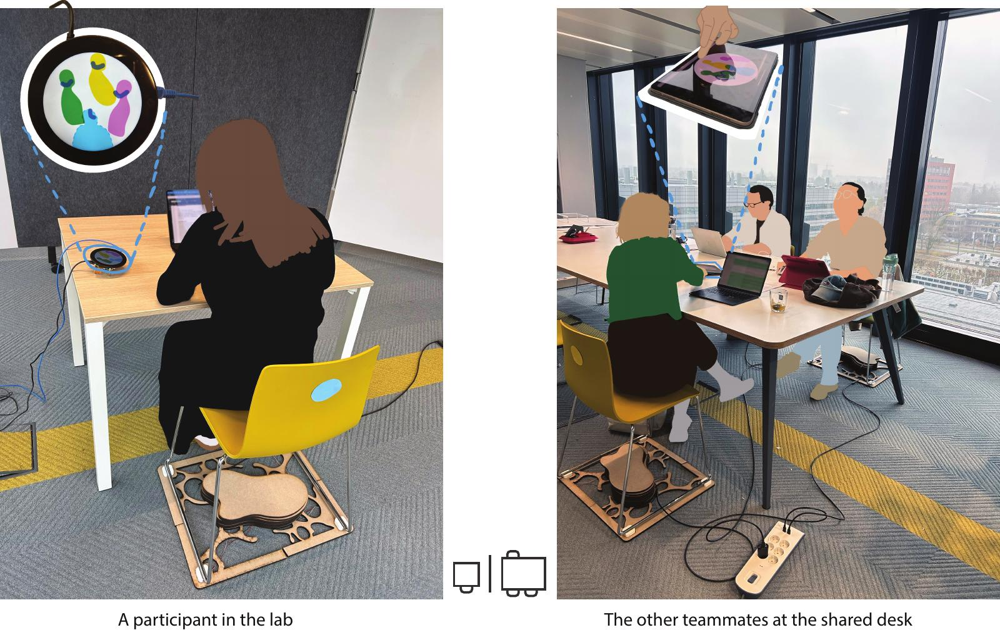
Each individual session ran about 35 minutes, followed by a questionnaire on the affective benefits and costs of awareness systems and an interview. Each team then joined a workshop to envision how such a system might fit their own practices. Running the three together meant the sources could be read against each other rather than in isolation.
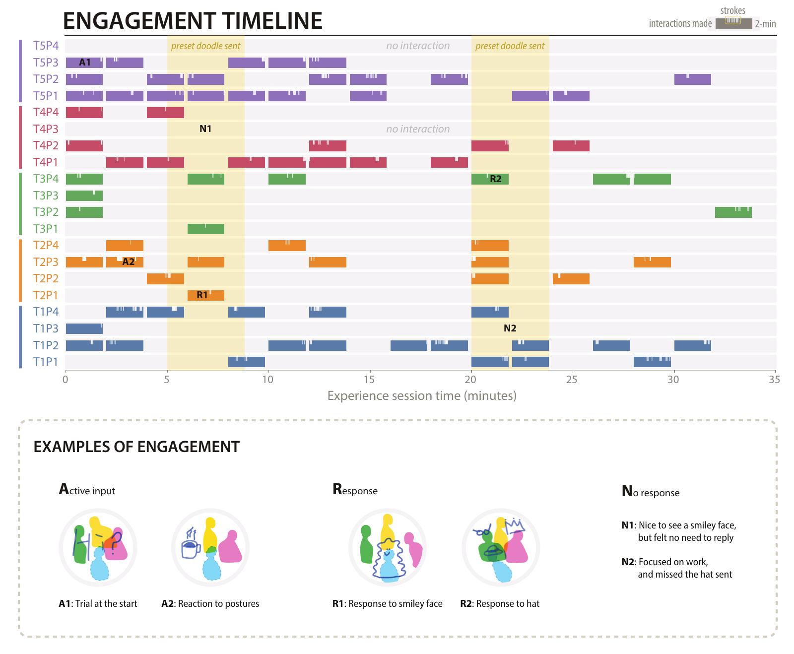
Roughly half the participants did not answer the preset doodles I sent mid-session, and that turned out to matter. Non-response was not read as a failure — participants attributed it to a busy colleague, and the doodles faded within two minutes, so nothing was left owing an answer. Four themes came out of the analysis: the prototype worked as a supplementary channel alongside existing tools; teams made sense of the ambiguous visualization with interpretive flexibility; the silhouettes and doodles carried social connectedness; and participants were continually negotiating visibility across identifiability, accountability and surveillance.
What the four studies answer
Awareness systems do not promote informal communication by reconstructing the office or staging encounters. They do it by recovering the conditions under which informal communication was likely in the first place.
Awareness is constructed, not delivered
Most systems treat awareness as a delivery problem — get the right status to the right person. The studies point the other way. Out of a situated need, a passing thought to check on others, a person perceives information from the system and interprets it against what they already know about the office, their colleagues, the day's calendar. Awareness is what they build from that, and it is built anew each time.
The process is fragmented. Often nothing follows; sometimes the person acts on the system and the interaction reaches the office, prompting a response and a new moment of awareness. Over time the fragments accumulate into knowledge that supports later collaboration. What a designer can actually work on is narrower than it first appears: the information the system shows, and the interactions it affords.
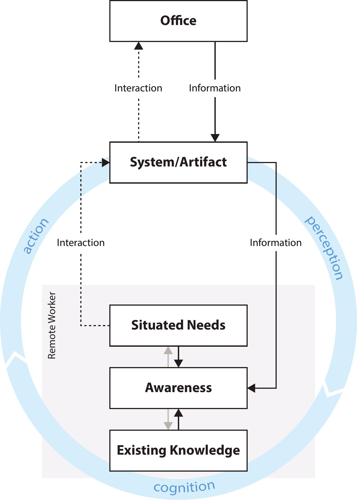
Five decisions operationalize the design space
Both evaluations used the design space the same way: start from the design goal, draw on the four aspects, and weigh the available technology and the use context throughout. That reduces to five recurring decisions, each with a principle attached.
- Descriptive information — depict what is happening rather than assign labels like present or busy. Description preserves the cues that interpretation needs.
- Realism — how much a representation looks like a person, and how much it behaves like one. These are separable, and behavior matters more. An abstract silhouette read as a real colleague because it moved on real posture data.
- Legibility — clear enough to be read as the intended activity, open enough that presence and absence stay comfortable to share.
- Attention — available when there is room, quiet during focused work. Low persistence helps: a display that shows the live moment and lets it pass leaves nothing to catch up on.
- Effort — light enough to perform and to leave unanswered, personal enough to carry a human touch. Participants valued the hand-drawn doodle for being imperfect and individual.
The aspects are mutually shaping rather than sequential. The representation bears on how it can be delivered; the form of the display bears on what interactions it can afford. Introducing sound as an interaction modality in one prototyping round immediately raised the question of realism, because repeated human sounds felt intrusive and had to be abstracted.
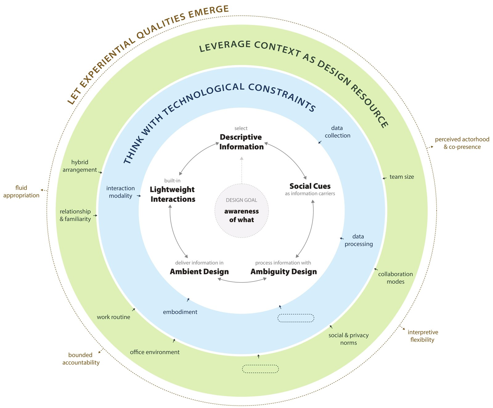
Four qualities carry information into awareness, and awareness into contact
Two qualities turn information into awareness. Perceived actorhood and co-presence — the sense that the display stands for actual colleagues, and the further sense of sharing a space with them. They come from a fitting level of realism and from continuous, peripheral delivery. Interpretive flexibility — the same display read more than one way, each worker settling what it means from their own needs and knowledge. That is what let one design sit in teams that worked very differently.
Two more turn awareness into contact. Bounded accountability — visibility without an obligation to account for it. Presence and absence carry no fixed explanation, a gesture can be made in passing and left unanswered, and the worker keeps some agency over what the system shows. Fluid appropriation — uses that were not designed in: workers turned to the display on their own rhythm and used the interactions to signal presence, send care, or share a moment.
On those conditions the approach supported informal communication in several forms: quick conversations, easier invitations into social activities, coordination toward being in the office at the same time, and non-verbal exchanges valued as a human moment.
The design works as a mediator of experience, not a producer of communication. It brings distant coworkers into a felt presence, keeps them easy to reach, and fits itself to each team's practices.
What I owned
Discovery interviews with knowledge workers across several countries. The design space. Three concept designs and their visual design. The sensor hardware. The software — HTML, CSS and JavaScript, Python, Raspberry Pi. Study logistics, recruitment and on-site setup. All four studies and all of the analysis. There was no one to hand any part of it to, which is the reason I know what each part costs.
What I would do differently
The work sits inside one academic organization and covers short, arranged use rather than months of ordinary work. I know how the displays land in a first session; I do not know how they settle in month six, and that is the question a product team would ask first.
The ambiguity that makes these designs work also lets them be misread, and the system offers nothing to correct a misreading. That trade-off is acceptable where relational ease matters more than precise coordination, and probably not acceptable where it doesn't. Making that call is a product decision, not a research one — and it depends on whose work the system is describing.